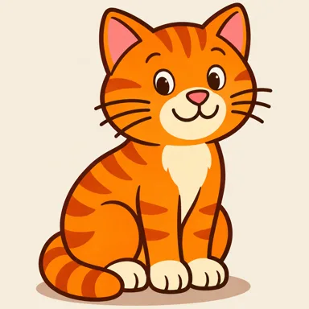

Trouver toutes les paires
Les cartes commencent face cachée. Retournez deux cartes. Si les images sont identiques, elles restent visibles. Si elles diffèrent, elles se retournent après un court délai.
Mémoriser une position
Si vous retournez un coq puis un chat, retenez où se trouve le chat. Quand vous découvrez un autre chat, revenez à l’emplacement du premier. Réduire les essais inutiles aide à finir en moins de coups.
Premier coup

Coup suivant
Choisir son niveau
Facile propose 6 paires, Moyen 10 et Difficile 15. Sur une grande grille, prenez vos repères en commençant par un coin ou une rangée.
Utiliser l’aide
Le bouton Aide peut vous rappeler l’emplacement d’une carte que vous avez déjà vue. Le compteur indique les paires trouvées et les coups joués. La partie se termine quand toutes les images ont leur paire.